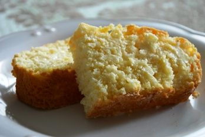

Bahamian Johnny Bread (also known as Johnny Cake) is a savory but slightly sweet side, similar to corn bread.
Recipe source
Ingredients
- 6 cups All Purpose Flour
- ¾ cup Sugar
- 6 tbsp Baking Powder
- 1 tsp Salt
- ½ cup Unsalted Butter, softened + ¼ cup Unsalted Butter, melted
- 2 cups Milk
- 1 cup Water
- 4 Eggs
- ¼ cup Vegetable Oil
Steps
- Preheat oven to 350°F. Grease two 8” round baking pans.
- In a mixing bowl, sift together the flour and baking powder. Stir in the sugar and salt.
- Add the softened butter and gently knead until well incorporated.
- Add the eggs, vegetable oil, milk and water. Mix well with a spoon until the texture of your mixture is between that of bread dough and cake batter, adding more water if necessary.
- Pour the mixture into the greased pans and bake for 30 minutes.
- Brush the melted butter over the top and continue to bake for 15 more minutes, or until the tops are golden brown and a toothpick comes out clean from the middle.
- Cut into slices and serve warm with butter or jam.